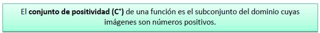
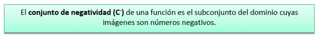
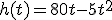
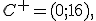

Matemática: Función Cuadrática
Conjuntos de positividad y negatividad


Para la función  diremos que el:
Conjunto de positividad:  , ya que para estos valores del dominio la función tiene solo imágenes positivas.
Conjunto de negatividad: , ya que para estos valores del dominio la función tiene solo imágenes negativas.
Cabe aclarar que el contexto del problema ejemplo se desarrolla solo en el conjunto de positividad.
Obra publicada con Licencia Creative Commons Reconocimiento Compartir igual 4.0